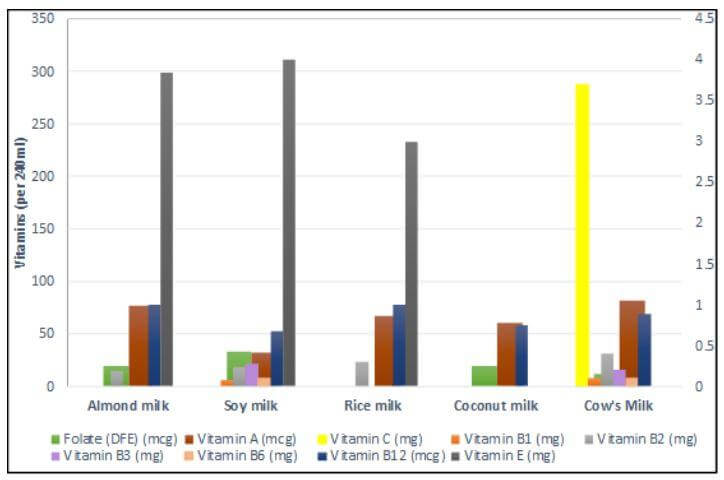

Sources
For the most part, vitamins are obtained from the diet, but some are acquired by other means: for example,
microorganisms in the gut flora produce vitamin K and biotin; and one form of vitamin D is synthesized
in skin cells when they are exposed to a certain wavelength of ultraviolet light present in sunlight.
Humans can produce some vitamins from precursors they consume: for example, vitamin A is synthesized
from beta carotene; and niacin is synthesized from the amino acid tryptophan.The Food Fortification
Initiative lists countries which have mandatory fortification programs for vitamins folic acid, niacin,
vitamin A and vitamins B1, B2 and B12
Deficient intake
The body's stores for different vitamins vary widely; vitamins A, D, and B12 are stored in significant
amounts, mainly in the liver, and an adult's diet may be deficient in vitamins A and D for many months
and B12 in some cases for years, before developing a deficiency condition. However, vitamin B3
(niacin and niacinamide) is not stored in significant amounts, so stores may last only a couple of weeks.
For vitamin C, the first symptoms of scurvy in experimental studies of complete vitamin C deprivation in humans have
varied widely, from a month to more than six months, depending on previous dietary history that determined body stores.
Deficiencies of vitamins are classified as either primary or secondary. A primary deficiency occurs when an
organism does not get enough of the vitamin in its food. A secondary deficiency may be due to an underlying disorder
that prevents or limits the absorption or use of the vitamin, due to a "lifestyle factor", such as smoking, excessive
alcohol consumption, or the use of medications that interfere with the absorption or use of the vitamin.
People who eat a varied diet are unlikely to develop a severe primary vitamin deficiency, but may be consuming less
than the recommended amounts; a national food and supplement survey conducted in the US over 2003-2006 reported that
over 90% of individuals who did not consume vitamin supplements were found to have inadequate levels of some of the
essential vitamins, notably vitamins D and E.
Well-researched human vitamin deficiencies involve thiamine (beriberi), niacin (pellagra),vitamin C (scurvy),
folate (neural tube defects) and vitamin D (rickets). In much of the developed world these deficiencies are rare
due to an adequate supply of food and the addition of vitamins to common foods. In addition to these classical
vitamin deficiency diseases, some evidence has also suggested links between vitamin deficiency and a number of
different disorders.
Excess intake
Some vitamins have documented acute or chronic toxicity at larger intakes, which is referred to as hypertoxicity.
The European Union and the governments of several countries have established Tolerable upper intake levels (ULs)
for those vitamins which have documented toxicity (see table). The likelihood of consuming too much of
any vitamin from food is remote, but excessive intake (vitamin poisoning) from dietary supplements does occur.
In 2016, overdose exposure to all formulations of vitamins and multi-vitamin/mineral formulations was reported
by 63,931 individuals to the American Association of Poison Control Centers with 72% of these exposures in children
under the age of five.In the US, analysis of a national diet and supplement survey reported that about 7%
of adult supplement users exceeded the UL for folate and 5% of those older than age 50 years exceeded the UL for
svitamin A.
